배포받은 StockTrading 프로젝트에 수정·삭제 API를 추가하고
Actuator · Validation · Docker를 적용한 기록
Day16 (8_5)/StockTradinglocalhost:8080/swagger-ui.html · Actuator localhost:8080/actuator
배포받은 StockTrading 프로젝트는 생성·조회만 구현되어 있었습니다.
여기에 수정·삭제 API를 추가하고, 운영 관점의 기능(Actuator · Validation · Docker)을 붙이는 것이 이번 과제입니다.
캡처 화면의 포트에 대하여 — 애플리케이션은 컨테이너 내부에서 8080으로 동작하지만,
촬영 당시 호스트의 8080 포트가 다른 프로세스에 점유되어 있어
-p 8082:8080으로 매핑해 실행했습니다.
그래서 화면의 주소가 localhost:8082로 표시됩니다. 동작에는 차이가 없습니다.
| 번호 | 요구사항 | 엔드포인트 | 결과 |
|---|---|---|---|
| 1 | updateStock · deleteStock |
PUT/DELETE /api/stocks/{id} | 완료 200 / 204 |
| 2 | updateUser · deleteUser |
PUT/DELETE /api/users/{id} | 완료 200 / 204 |
| 3 | getStockByCode |
GET /api/stocks/code/{code} | 완료 200 |
| 4 | Actuator 적용 | GET /actuator/** | 완료 7종 노출 |
| 5 | Validation 적용 | 전 엔드포인트 | 완료 400 + 필드별 사유 |
| 6 | Docker에 올리기 | 멀티 스테이지 빌드 | 완료 healthy |
StockTrading/ ├─ build.gradle ← 수정: actuator 의존성 ├─ Dockerfile ← 신규 ├─ .dockerignore ← 신규 └─ src/main/ ├─ java/com/skala/stock/ │ ├─ controller/StockController.java ← 수정: PUT · DELETE · code 조회 │ ├─ controller/UserController.java ← 수정: PUT · DELETE │ ├─ service/StockService.java ← 수정: update · delete · getByCode │ ├─ service/UserService.java ← 수정: update · delete │ ├─ service/PortfolioService.java ← 수정: 예외 타입 교체 │ ├─ service/TransactionService.java ← 수정: 예외 타입 교체 │ ├─ repository/PortfolioRepository.java ← 수정: 참조 검사 메서드 │ ├─ repository/TransactionRepository.java ← 수정: 참조 검사 메서드 │ ├─ dto/ErrorResponse.java ← 신규: 공통 오류 응답 │ └─ exception/ ← 신규 패키지 │ ├─ GlobalExceptionHandler.java │ ├─ ResourceNotFoundException.java (404) │ ├─ DuplicateResourceException.java (409) │ ├─ ResourceInUseException.java (409) │ └─ BusinessRuleException.java (400) └─ resources/application.yml ← 수정: actuator 노출 설정
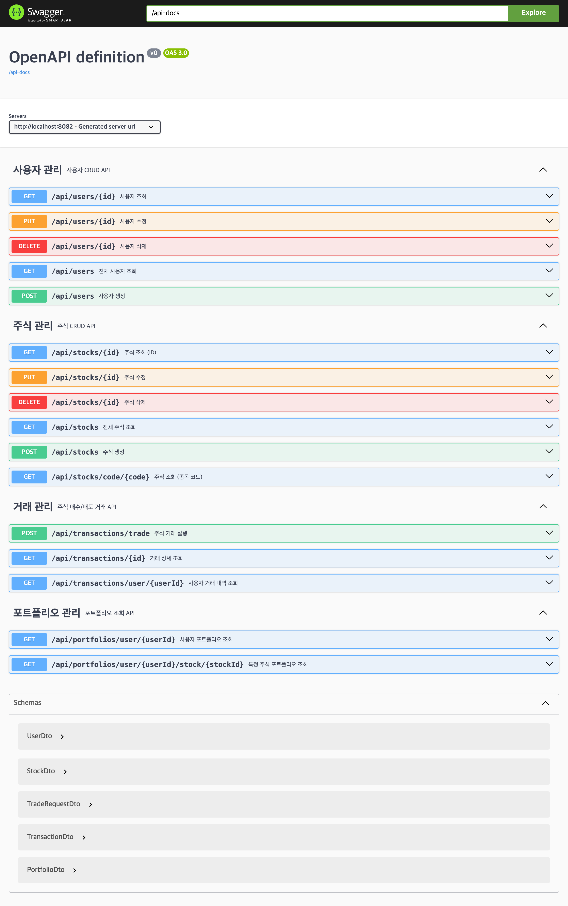
종목 코드는 unique 제약이 걸려 있습니다. 수정할 때 다른 종목이 쓰는 코드로는 바꿀 수 없지만,
자기가 쓰던 코드를 그대로 보내는 것은 허용해야 합니다. 그래서 "코드가 바뀌었는지"를 먼저 확인합니다.
@Transactional public StockDto updateStock(Long id, StockDto stockDto) { Stock stock = findStockOrThrow(id); if (!stock.getCode().equals(stockDto.getCode()) && stockRepository.existsByCode(stockDto.getCode())) { throw new DuplicateResourceException("이미 존재하는 종목 코드입니다: " + stockDto.getCode()); } stock.setCode(stockDto.getCode()); stock.setName(stockDto.getName()); stock.setCurrentPrice(stockDto.getCurrentPrice()); stock.setPreviousPrice(stockDto.getPreviousPrice()); // 조회한 엔티티는 영속 상태라 트랜잭션이 끝날 때 변경 감지로 UPDATE가 나갑니다. return convertToDto(stockRepository.save(stock)); }
@PreUpdate가 걸려 있어 updated_at은 자동으로 갱신됩니다.
서비스 코드에서 시각을 직접 넣지 않았는데도 값이 바뀝니다.
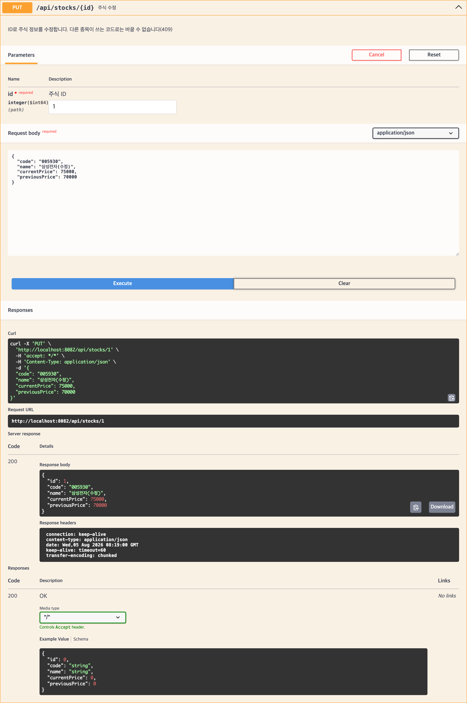
PUT /api/stocks/1 — 삼성전자 현재가 70,000 → 75,000 수정, 200 OK이번 과제에서 가장 신경 쓴 부분입니다. portfolios와 transactions 테이블이
stock_id를 NOT NULL 외래키로 참조하고 있습니다.
@ManyToOne(fetch = FetchType.LAZY) @JoinColumn(name = "stock_id", nullable = false) private Stock stock;
참조가 남은 채로 삭제하면 DB 무결성 제약에 걸려 500이 납니다. 사용자 입장에서는 "서버가 고장났다"로 보이지만 실제로는 요청이 잘못된 것이므로, 미리 확인해서 409 Conflict와 이유를 돌려주도록 했습니다.
// Repository — 삭제 전 참조 검사용 boolean existsByStockId(Long stockId); // Service @Transactional public void deleteStock(Long id) { Stock stock = findStockOrThrow(id); if (portfolioRepository.existsByStockId(id)) { throw new ResourceInUseException( "보유 중인 포트폴리오가 있어 삭제할 수 없습니다: " + stock.getCode()); } if (transactionRepository.existsByStockId(id)) { throw new ResourceInUseException( "거래 내역이 있어 삭제할 수 없습니다: " + stock.getCode()); } stockRepository.delete(stock); }
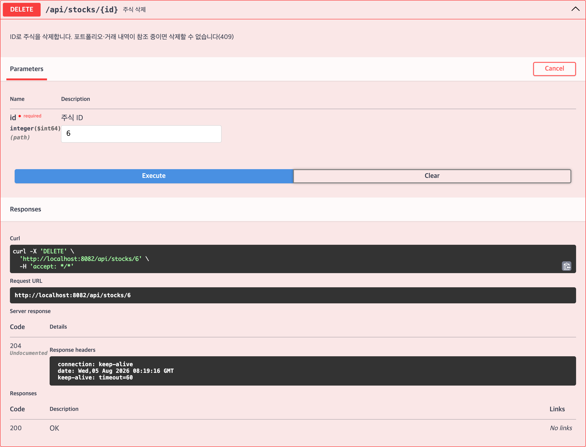
DELETE /api/stocks/6 — 참조가 없는 종목은 204 No ContentDELETE /api/stocks/2 — 매수 기록이 있는 종목은 409 Conflict와 사유 반환구조는 주식과 같습니다. 다만 사용자는 사용자명과 이메일 두 가지가 유일해야 하므로 중복 검사가 두 번 들어갑니다.
if (!user.getUsername().equals(userDto.getUsername()) && userRepository.existsByUsername(userDto.getUsername())) { throw new DuplicateResourceException("이미 존재하는 사용자명입니다: " + userDto.getUsername()); } if (!user.getEmail().equals(userDto.getEmail()) && userRepository.existsByEmail(userDto.getEmail())) { throw new DuplicateResourceException("이미 존재하는 이메일입니다: " + userDto.getEmail()); }
삭제할 때 거래 내역을 함께 지우지 않았습니다. 포트폴리오는 현재 상태라 지워도 되지만, 거래 내역은 "언제 무엇을 얼마에 샀다"는 기록이라 사용자를 지운다고 함께 없애면 안 된다고 판단했습니다. 그래서 참조가 남아 있으면 삭제를 거절합니다.
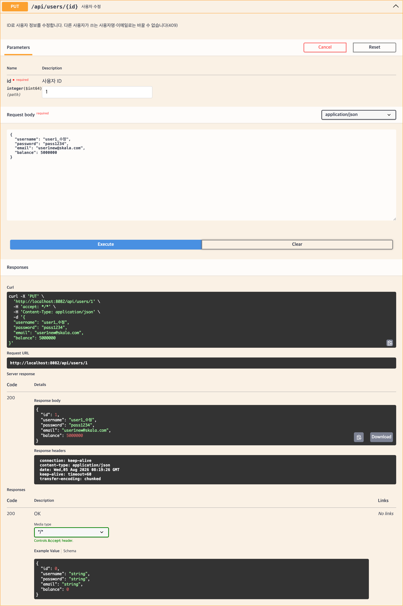
PUT /api/users/1 — 사용자명 · 이메일 · 잔액 수정, 200 OKDELETE /api/users/4 — 참조가 없는 사용자는 204 No Content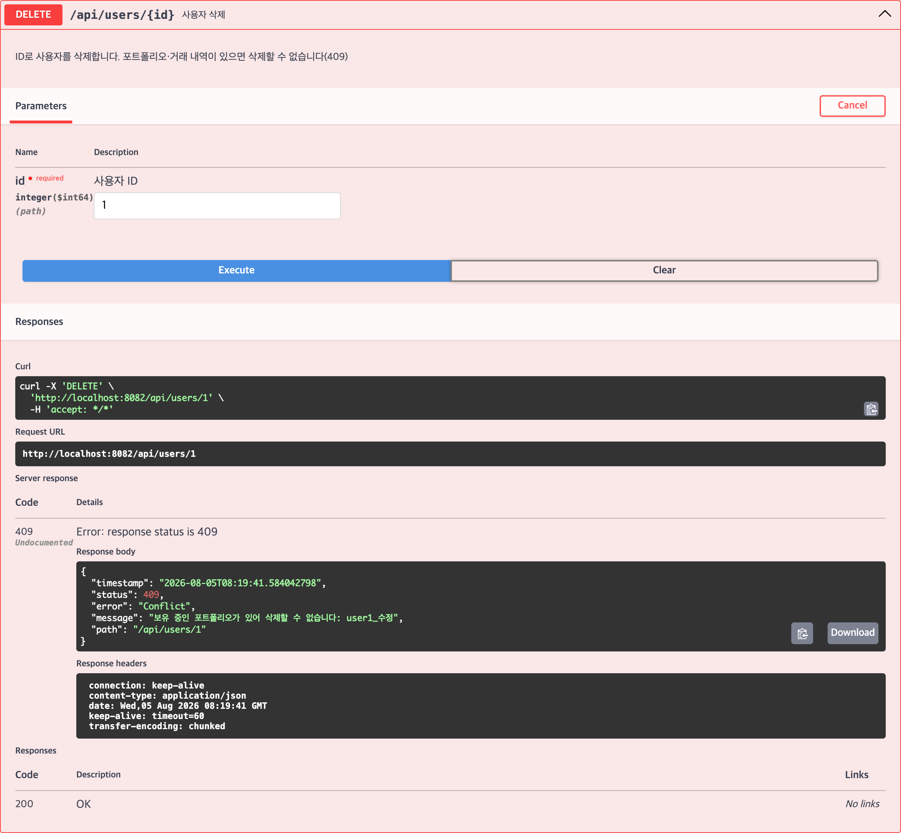
DELETE /api/users/1 — 포트폴리오를 보유한 사용자는 409 Conflictid는 DB가 부여한 값이라 외부에서 알기 어렵습니다.
반면 종목 코드 005930은 사용자가 아는 값이므로 별도 조회 경로를 두었습니다.
findByCode는 Repository에 이미 있어서 그대로 활용했습니다.
@GetMapping("/code/{code}") public ResponseEntity<StockDto> getStockByCode( @Parameter(description = "종목 코드", example = "005930") @PathVariable @NotBlank(message = "종목 코드는 비어 있을 수 없습니다") String code) { return ResponseEntity.ok(stockService.getStockByCode(code)); }
주소 설계 — /api/stocks/{id}가 이미 한 칸짜리 경로를 차지하고 있어
/api/stocks/{code}로 만들면 충돌합니다. 그래서 /code/를 한 단계 더 두어
두 칸짜리 경로로 분리했습니다.
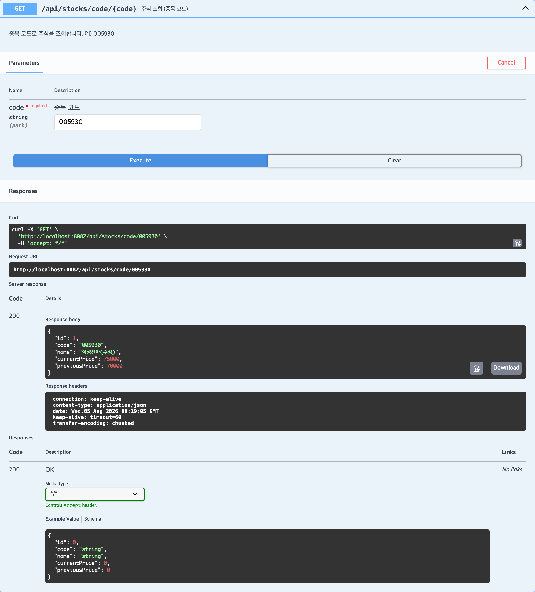
GET /api/stocks/code/005930 — 앞서 수정한 현재가 75,000이 그대로 조회됨의존성을 추가하고 필요한 엔드포인트를 열었습니다. 기본값은 health 하나만 노출됩니다.
// build.gradle implementation 'org.springframework.boot:spring-boot-starter-actuator'
# application.yml management: endpoints: web: exposure: include: health, info, metrics, env, beans, mappings endpoint: health: show-details: always # 디스크·DB 등 하위 구성요소 상태까지 표시 info: env: enabled: true info: app: name: SKALA Stock Trading API description: 주식 거래 실습 프로젝트 (Spring Boot + JPA) version: 0.0.1-SNAPSHOT
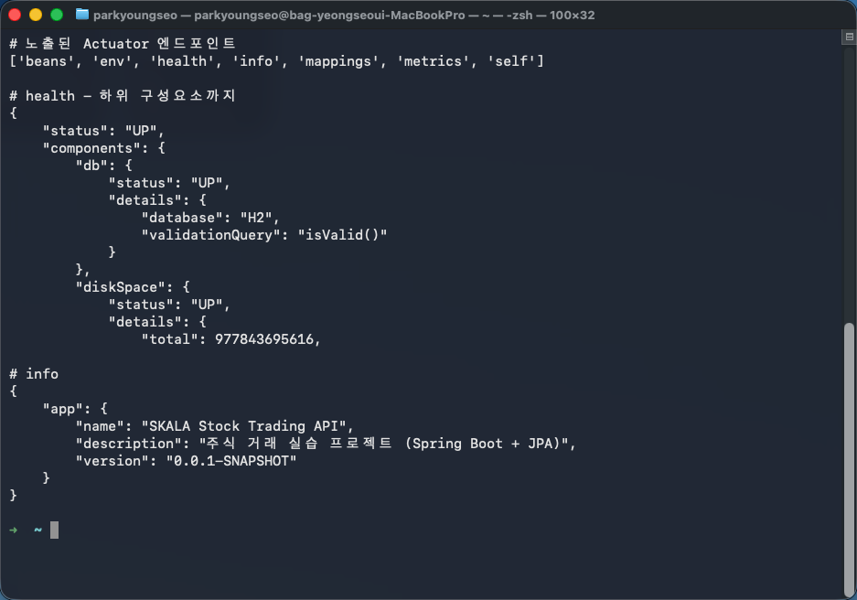
health 하위 구성요소 · info 실행 결과/actuator/metrics는 65개 지표를 제공하고, /actuator/mappings로는
실제로 등록된 URL 매핑을 확인할 수 있어 이번처럼 엔드포인트를 새로 추가했을 때 유용했습니다.
Docker HEALTHCHECK에도 활용했습니다.
/actuator/health가 "status":"UP"을 돌려주는지로 컨테이너 상태를 판정하도록 해서,
docker ps에 (healthy)가 표시됩니다.
spring-boot-starter-validation과 DTO 제약(@NotBlank 등),
@Valid는 이미 프로젝트에 들어 있었습니다. 그런데 전역 예외 처리기가 없어서
두 가지 문제가 있었습니다.
| 문제 | 결과 |
|---|---|
| 검증 실패 응답에 어느 필드가 왜 틀렸는지 없음 | Spring 기본 형식만 반환 |
서비스가 던진 RuntimeException이 그대로 전파 | "없는 주식 조회"도 500 |
예외 타입을 나누고 @RestControllerAdvice에서 상태 코드로 매핑했습니다.
| 상황 | 예외 | 상태 코드 |
|---|---|---|
| 입력값 검증 실패 | MethodArgumentNotValidException | 400 |
| 경로 변수 제약 위반 | ConstraintViolationException | 400 |
| 타입 불일치 · 깨진 JSON | MethodArgumentTypeMismatch 등 | 400 |
| 잔액 · 수량 부족 | BusinessRuleException | 400 |
| 자원 없음 | ResourceNotFoundException | 404 |
| 없는 경로 · 미지원 메서드 | NoResourceFoundException 등 | 404 / 405 |
| 중복 · 참조 중 삭제 | Duplicate · ResourceInUse | 409 |
| 그 밖의 예외 | Exception | 500 |
@ExceptionHandler(MethodArgumentNotValidException.class) public ResponseEntity<ErrorResponse> handleValidation( MethodArgumentNotValidException e, HttpServletRequest request) { Map<String, String> fieldErrors = new LinkedHashMap<>(); for (FieldError fe : e.getBindingResult().getFieldErrors()) { // 같은 필드에 여러 제약이 걸리면 첫 번째 메시지만 남긴다 fieldErrors.putIfAbsent(fe.getField(), fe.getDefaultMessage()); } return build(HttpStatus.BAD_REQUEST, "입력값이 올바르지 않습니다", request, fieldErrors); }
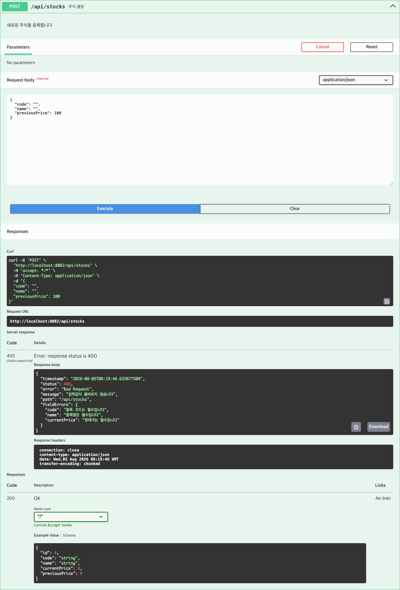
fieldErrors에 필드별 사유가 담김@PathVariable에 붙인 제약은 클래스에 @Validated가 있어야 동작합니다.
이것이 없으면 애노테이션을 붙여도 아무 일도 일어나지 않습니다.
주식·사용자뿐 아니라 포트폴리오·거래 컨트롤러까지 네 곳 모두 적용해,
앱 전체에서 같은 방식으로 걸러지도록 했습니다.
@RestController @RequestMapping("/api/stocks") @Validated // @PathVariable 에 붙인 @Min · @NotBlank 를 동작시키기 위해 필요 public class StockController { @GetMapping("/{id}") public ResponseEntity<StockDto> getStockById( @PathVariable @Min(value = 1, message = "ID는 1 이상이어야 합니다") Long id) { … }
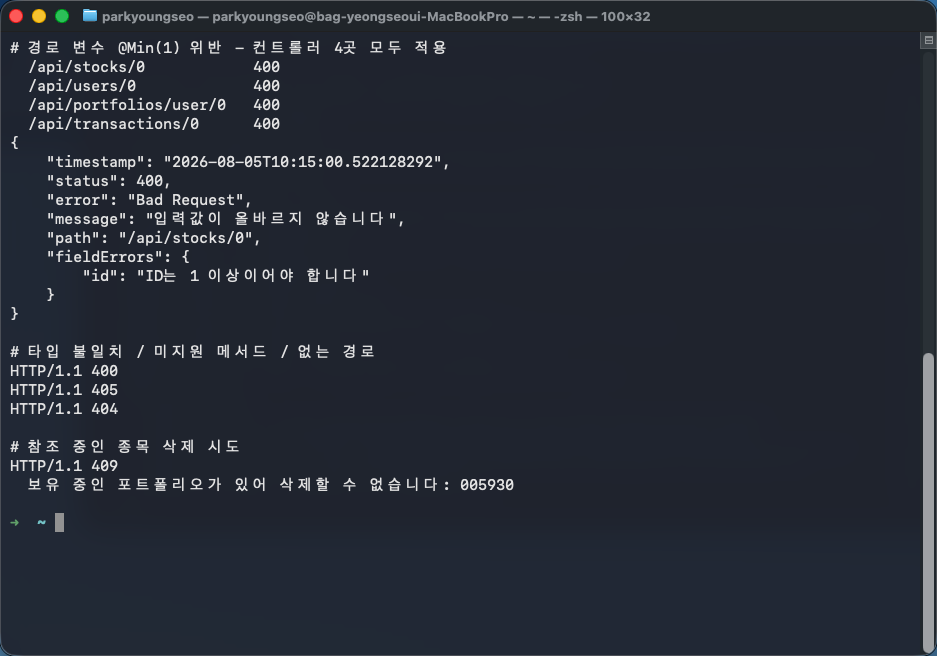
뜻밖의 발견 — Swagger UI에서 id=0으로 실행하면 요청 자체가 나가지 않습니다.
springdoc이 @Min(1)을 OpenAPI 스키마의 minimum: 1로 내보내고,
Swagger UI가 그것을 읽어 브라우저에서 먼저 차단하기 때문입니다.
서버 측 검증은 위 curl로 따로 확인했습니다.
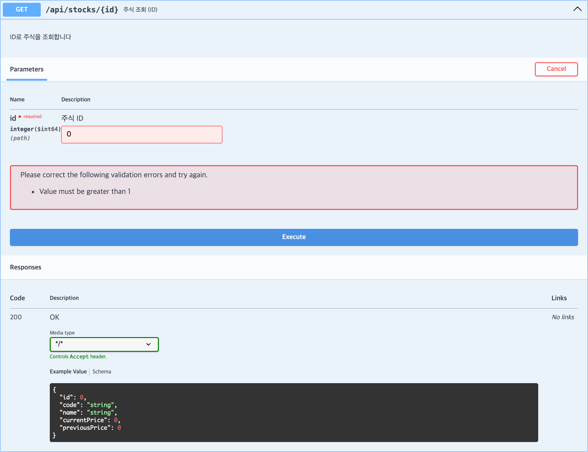
멀티 스테이지 빌드로 빌드 환경과 실행 환경을 분리했습니다. 빌드에는 JDK가 필요하지만 실행에는 JRE면 충분하므로, 최종 이미지에 컴파일러를 넣지 않습니다.
FROM eclipse-temurin:21-jdk AS builder # 1단계: jar 생성 WORKDIR /build COPY gradlew ./ COPY gradle gradle COPY build.gradle settings.gradle ./ RUN chmod +x gradlew && ./gradlew dependencies --no-daemon COPY src src RUN ./gradlew bootJar --no-daemon -x test FROM eclipse-temurin:21-jre # 2단계: 실행만 WORKDIR /app RUN useradd --create-home --shell /bin/bash appuser USER appuser COPY --from=builder /build/build/libs/*.jar app.jar EXPOSE 8080 # 컨테이너 상태 점검에 Actuator health 엔드포인트를 사용한다 HEALTHCHECK --interval=30s --timeout=3s --start-period=20s --retries=3 \ CMD ["sh", "-c", "wget -qO- http://localhost:8080/actuator/health | grep -q '\"status\":\"UP\"'"] ENTRYPOINT ["java", "-jar", "app.jar"]
그 외 적용한 것:
appuser 계정으로 실행.dockerignore — build/, .gradle/,
bin/, .git/ 제외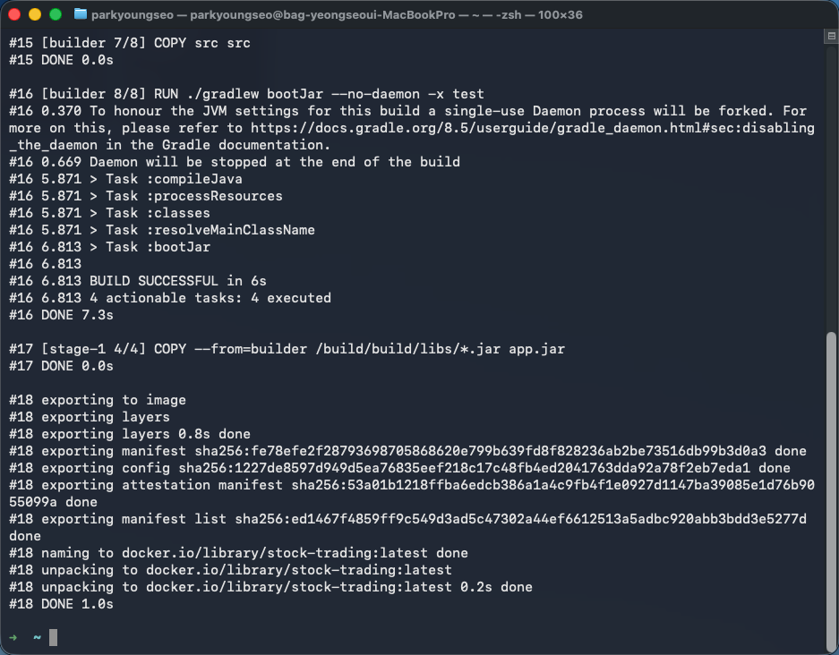
docker build --no-cache — 1단계에서 bootJar로 jar를 만들고 2단계 JRE 이미지로 복사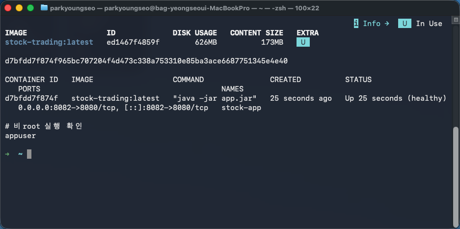
appuser로 실행됨이 보고서의 모든 Swagger 캡처와 curl 결과는 위 Docker 컨테이너에서 실행한 것입니다. 즉 이미지 빌드부터 API 동작까지 하나의 흐름으로 검증되었습니다.
배포받은 프로젝트에 gradle-wrapper.properties만 있고
gradlew와 gradle-wrapper.jar가 빠져 있어 ./gradlew를 실행할 수 없었습니다.
시스템에 Gradle도 설치되어 있지 않은 상태였습니다.
Day15 프로젝트의 래퍼 파일을 복사해 해결했습니다. 래퍼 jar는 distributionUrl을 읽어
동작하므로, 이 프로젝트가 지정한 Gradle 8.5를 받아 정상 빌드됩니다.
가장 오래 헤맨 부분입니다. 마지막 안전망으로 넣은
@ExceptionHandler(Exception.class)가 없는 경로 요청까지 잡아
500으로 만들고 있었습니다. 원래는 Spring이 404를 반환하던 상황입니다.
$ curl -i localhost:8080/api/nope HTTP/1.1 500 ← 404여야 하는데 catch-all 에 걸림 # 로그 ERROR ... GlobalExceptionHandler : 처리하지 못한 예외 org.springframework.web.servlet.resource.NoResourceFoundException: No static resource api/nope.
NoResourceFoundException과 HttpRequestMethodNotSupportedException을
catch-all보다 앞에 따로 처리해서 각각 404 · 405로 돌려주도록 고쳤습니다.
"모든 예외를 잡는 핸들러"를 둘 때는 프레임워크가 이미 의미를 부여한 예외를 덮어쓰지 않는지
확인해야 한다는 것을 배웠습니다.
deleteStock을 처음 구현했을 때는 바로 repository.delete()를 호출했습니다.
이러면 포트폴리오·거래 내역이 참조 중인 종목에서 무결성 제약 위반이 발생합니다.
Repository에 existsByStockId · existsByUserId를 추가해
삭제 전에 확인하고 409로 거절하도록 바꿨습니다.
마지막 안전망으로 DataIntegrityViolationException 핸들러도 함께 두었습니다.
Docker 컨테이너를 대상으로 다음 항목을 확인했습니다.
| 검증 항목 | 기대 | 결과 |
|---|---|---|
GET /api/stocks/code/005930 | 200 | 200 |
GET /api/stocks/code/999999 없는 코드 | 404 | 404 |
GET /api/stocks/0 · /api/users/0 | 400 | 400 |
PUT /api/stocks/{id} · /api/users/{id} | 200 | 200 |
DELETE /api/stocks/{id} · /api/users/{id} | 204 | 204 |
| 참조 중인 주식 · 사용자 삭제 | 409 | 409 |
| 중복 코드로 수정 | 409 | 409 |
| 빈 값으로 생성 (검증 실패) | 400 | 400 |
| 잔액 초과 매수 (업무 규칙) | 400 | 400 |
| 없는 경로 · 미지원 메서드 | 404 / 405 | 404 / 405 |
GET /actuator/health | 200 UP | 200 |
| Swagger UI | 200 | 200 |
@PathVariable 제약은 @Validated가 있어야 동작하고,
그 제약이 OpenAPI 문서에도 전파되어 Swagger UI가 미리 걸러 준다.health는 사람이 보는 용도만이 아니라
Docker HEALTHCHECK 같은 자동 점검에 연결할 수 있다.UserDto가 응답에 비밀번호를 그대로 포함하고 있다.
요청용과 응답용 DTO를 분리하거나 @JsonProperty(access = WRITE_ONLY)를 적용해야 한다.PATCH와 부분 수정용 DTO를 두면 개선된다.